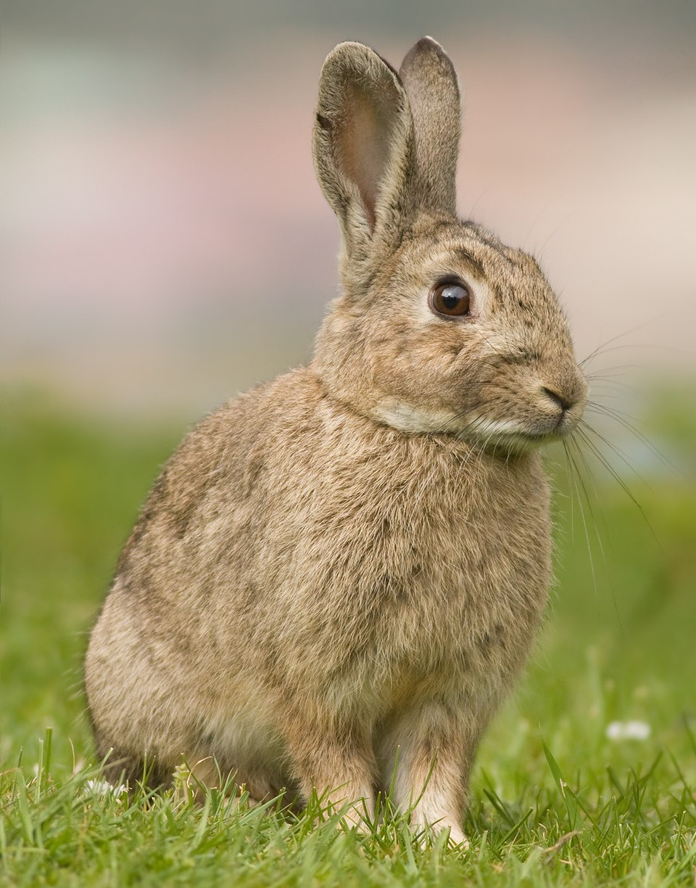

<a href="https://commons.wikimedia.org/wiki/File:Oryctolagus_cuniculus_Tasmania_2_%28cropped%29.jpg">Oryctolagus cuniculus Tasmania 2 (cropped).jpg</a> © 2009 by <a href="https://commons.wikimedia.org/wiki/File:Oryctolagus_cuniculus_Tasmania_2_%28cropped%29.jpg">JJ Harrison</a> is licensed under <a href="https://creativecommons.org/licenses/by-sa/4.0/">CC BY-SA 4.0</a>